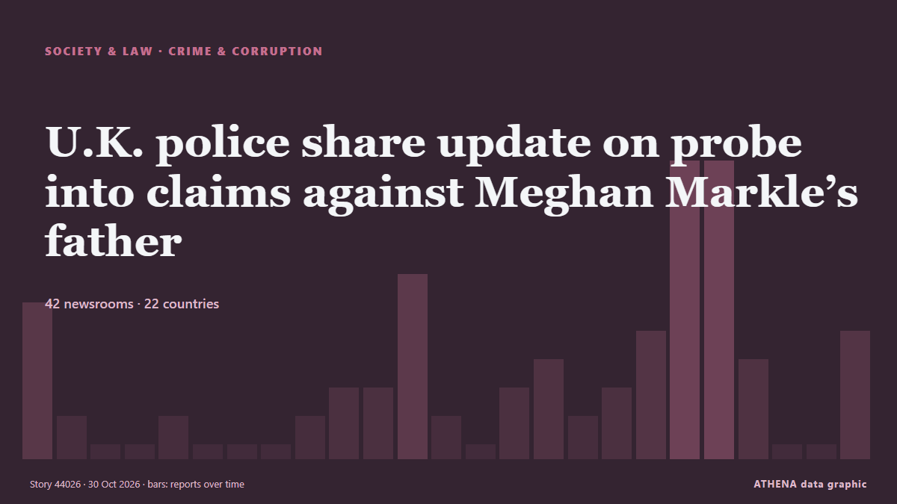

U.K. police share update on probe into claims against Meghan Markle’s father

The Metropolitan Police acknowledged receiving a letter in 2019 regarding accusations about Meghan Markle’s father but did not share this information with other law agencies. из Arab News
Независимые источники: 39 изданий в 20 странах, с 24 окт.; первым сообщил Arab News; освещение идёт на спад. ATHENA оценивает риск как умеренный (3.3/10), прежде всего из-за тяжести описываемого ущерба и географического и отраслевого охвата. Уверенность — 88 % (высокая); подтверждают независимые источники: 39 изданий, средняя надёжность источников — 73 %. СМИ по странам: Великобритания (14), Индия (3), Соединенные Штаты (2). Освещение: с 24 окт. по 29 окт., 123 ч.
Почему это важно: Правовые и политические изменения меняют права, обязанности и государственные услуги для затронутых людей.
Что изменилось: 15 новых сообщений от 11 редакций за 24 часа до 30 окт..
Первый заголовок: UK police says ‘claims’ over Meghan Markle’s dad not sent to other law enforcement
Заголовки приводятся на английском языке, как они были опубликованы.
Коротко в цифрах
Отобрано, оценено и написано по опубликованной методологии ATHENA. Ни один редактор не вмешивается в отдельные события. Как это создаётся ›
| 24 Oct 12:43 UTC | 5 |
|---|---|
| 24 Oct 18:43 UTC | 1 |
| 25 Oct 00:43 UTC | 0 |
| 25 Oct 06:43 UTC | 0 |
| 25 Oct 12:43 UTC | 1 |
| 25 Oct 18:43 UTC | 0 |
| 26 Oct 00:43 UTC | 0 |
| 26 Oct 06:43 UTC | 0 |
| 26 Oct 12:43 UTC | 1 |
| 26 Oct 18:43 UTC | 2 |
| 27 Oct 00:43 UTC | 2 |
| 27 Oct 06:43 UTC | 5 |
| 27 Oct 12:43 UTC | 1 |
| 27 Oct 18:43 UTC | 0 |
| 28 Oct 00:43 UTC | 2 |
| 28 Oct 06:43 UTC | 3 |
| 28 Oct 12:43 UTC | 1 |
| 28 Oct 18:43 UTC | 2 |
| 29 Oct 00:43 UTC | 4 |
| 29 Oct 06:43 UTC | 6 |
| 29 Oct 12:43 UTC | 10 |
| 29 Oct 18:43 UTC | 3 |
| 30 Oct 00:43 UTC | 0 |
| 30 Oct 06:43 UTC | 0 |
| 30 Oct 12:43 UTC | 4 |
| 28 Oct 16:42 UTC | 2.4 |
|---|---|
| 28 Oct 18:25 UTC | 3.1 |
| 30 Oct 15:26 UTC | 3.3 |
Откуда эти цифры
Значимость
Риск
Уверенность
Освещение — кто сообщил и когда
заголовок в оригинале · открывает источник- Arab News · Саудовская АравияUK police says ‘claims’ over Meghan Markle’s dad not sent to other law enforcement
- The Guardian · ВеликобританияMet says it shared allegations about Meghan’s father with her but not other forces
- NBC News (World) · Соединенные ШтатыU.K. police received claims about Meghan’s father in 2019 but didn’t alert other forces
- Anadolu Agency (English) · ТурцияLondon police acknowledge receiving allegations against Meghan Markle's father, not sharing them with authorities
- RTÉ News · ИрландияMet police received 'claims' about Meghan Markle's father
- CNA (Channel NewsAsia) · СингапурUK police say 'claims' over Meghan Markle's dad not sent to other law enforcement
- ProtoThema English ·Meghan Markle’s father admits paying for sex but denies child abuse allegations as letter reveals bitter family rift
- Evening Standard (London) · ВеликобританияZoe Ball lost BBC Radio 2 gig because she was 'over 50', dad Johnny claims
- Stuff · Новая ЗеландияUK police were warned Thomas Markle posed threat to Meghan and Harry
- Times of India · ИндияTyler Perry lists 22.5-acre mansion where Harry and Meghan stayed for $57m
- Stuff · Новая ЗеландияChild hurt in ‘appalling’ Myers Park attack stable, police say
- Belfast Telegraph · ВеликобританияJeffrey Donaldson ‘gifted’ himself a birthday rape at Westminster office, alleged victim claims
- CGTN (China) · КитайChina lodges representation over UK police's excessive law enforcement
- Indian Express · ИндияThief shot her father in the leg, Pune girl punched him in the stomach
- Liverpool Echo · ВеликобританияMum red-faced as school send official warning letter over what she wore at pick up
- Fortune · Соединенные ШтатыI helped a billionaire couple tell their kids they’d already received their inheritance. They didn’t take it well
- Anadolu Agency (English) · ТурцияChina protests UK’s ‘excessive' border law enforcement
- RTÉ News · ИрландияEnforcement of flavoured vapes ban could take a year
- The Scotsman · ВеликобританияBonfire night will see the largest number of police deployed to Scotland since Trump visit
- Birmingham Mail · ВеликобританияPolice failings exposed after psychotic patient killed dad at 90mph on Soho Road
- The Herald (Scotland) · ВеликобританияBonfire Night to have 'largest police deployment since Trump visit'
- Manchester Evening News · ВеликобританияMum fuming as school sends her warning letter over her clothing choices at pick up time
- MyLondon · ВеликобританияLondon dad dies in agony after doctors 'mistook' cancer for pancreatitis
- The Daily Star — page reader · БангладешJatrabari man dies after alleged beating; family questions police handling
- The Herald · ЗимбабвеActress Amanda Manku’s father to be sentenced in January
- Bangkok Post — page reader · ТаиландChadchart rejects claims of relief rift
- NDTV · ИндияTamil Nadu Minister S Keerthana Denies Bribe Allegations, Warns Of Legal Action
- Daily Trust · НигерияPolice hand over 69 bags of suspected cannabis to NDLEA
- Sydney Morning Herald · АвстралияLeaked letter reveals growing Labor rift over Kimberley fracking
- IOL · Южно-Африканская РеспубликаPinetown father recounts shootout during attempted hijacking outside his home
- The Scotsman · ВеликобританияReaders Letters: Fifty years on, another Healey bungles Budget
- BBC News · ВеликобританияWatch: VHS tapes and computers handed to police as Thomas Markle is investigated
- Sydney Morning Herald · АвстралияPolice find sex offender who escaped custody
- Daily Tribune · ФилиппиныQC PLEB receives complaint over police action at DAR protest
- Birmingham Mail · ВеликобританияPolice name Birmingham number you should never answer on your phone
- Sky News (World) · ВеликобританияPolice to examine Thomas Markle's digital devices after child sex abuse image claims
- BBC News · ВеликобританияPhilippine police obtain warrant to search Thomas Markle's devices
- Middle East Eye · INTIran received letter from US's Vance but yet to respond, news agency reports
- TASS (English) · РоссияIran yet to respond to Vance’s letter to security council secretary — Tasnim
- Kurdistan24 (English) · ИракIran Says It Has Received Letter from US Vice President Amid Peace Efforts